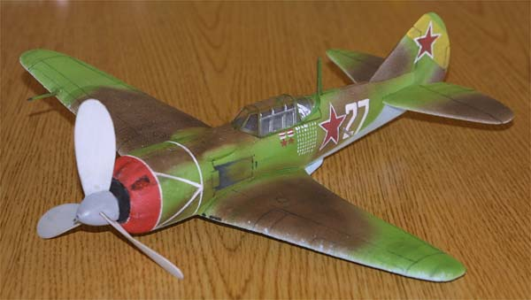
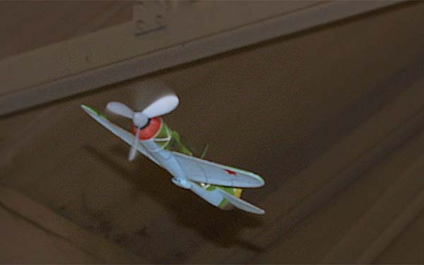

Tom Whitworth's Lavochkin LA7 |
|
Tom's first foray into foam peanuts is shown here on it's first outing.
Despite being a completely different type of construction, Tom turned in a fine effort that flies really well. The Lavochkin weighs 10 grams empty, and Tom concedes that it is overweight. Despite this, the model flies on the proverbial rails, and proves that stick and tissue is not the only way to build a successful model. |
|
The Lavochkin is off on another successful ...

|

Copyright 2002, Thayer Syme. All rights reserved